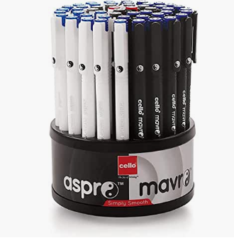
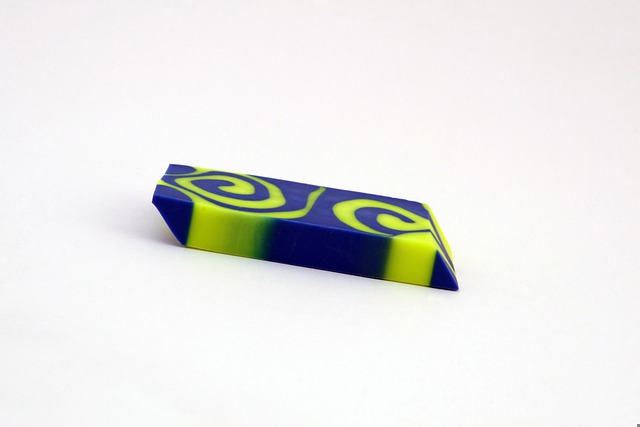
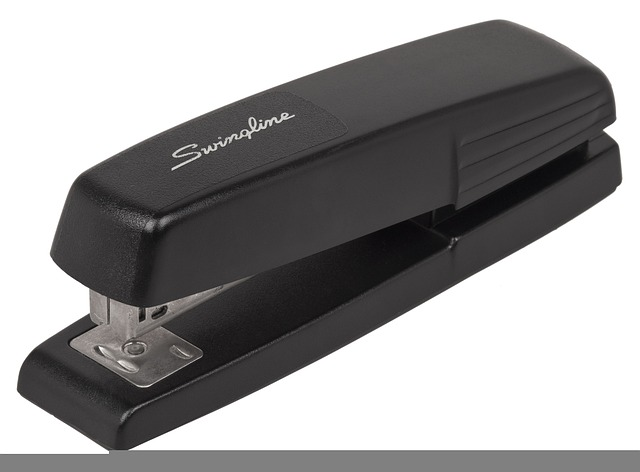

The Apsara platinum pencil is the no. 1 recommended pencil by teachers for children, designed to aid legibility and good penmanship What type of pencil is Apsara? APSARA Assorted Drawing Pencils (HB-2B-4B-6B-8B-10B) Pencil (Set of 60, Black) Assorted Drawing Pencils (HB-2B-4B-6B-8B-10B).
Simply put, UNESCO defined books as those textual artefacts published by. commercial publishers whose codex-like format was visually different from other. print media such as magazines and daily papers, and whose business model was the. copy sale of a single item [3

"Cello" is a well-recognized name in the 'Pen industry'. 'Pin Point' was one of its major products which were very successful.

What are erasers made of? The base material of an eraser is rubber, which can either be synthetic or natural synthetic rubber can be found in a range of materials, and can even be derived from chemicals like butadiene and styrene. Natural rubber, however, is formed from the latex produced from rubber trees

The TI-NSpire by Texas Instruments is arguably the most powerful and reliable calculator you can buy. The two different types of TI-NSpire—the CX II and the CX II CAS—are both great options for math students handling coursework or about to tackle national exams (SATs and ACTs).
